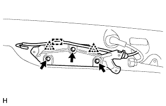

СТЕКЛО ДВЕРИ БАГАЖНОГО ОТДЕЛЕНИЯ (для моделей с кронштейном запасного колеса на двери багажного отделения) > УСТАНОВКА |
| 1. УСТАНОВИТЕ ЛЕВЫЙ ФИКСАТОР СТЕКЛА ДВЕРИ БАГАЖНОГО ОТДЕЛЕНИЯ |
Нанесите грунтовку "G" на стекло в местах, где предполагается разместить фиксаторы.
Снимите с нового фиксатора отслаивающуюся бумагу. Установите фиксаторы на стекло в местах, показанных на рисунке.
| *a | Задняя сторона |
| *b | Керамический паз |
| 2. УСТАНОВИТЕ ПРАВЫЙ ФИКСАТОР СТЕКЛА ДВЕРИ БАГАЖНОГО ОТДЕЛЕНИЯ |
Нанесите грунтовку "G" на стекло в местах, где предполагается разместить фиксаторы.
Снимите с нового фиксатора отслаивающуюся бумагу. Установите фиксаторы на стекло в местах, показанных на рисунке.
| *a | Задняя сторона |
| *b | Керамический паз |
| 3. УСТАНОВИТЕ КЛЕЙКИЙ УПЛОТНИТЕЛЬ ОКОННОГО СТЕКЛА ДВЕРИ БАГАЖНОГО ОТДЕЛЕНИЯ |
Нанесите грунтовку "G" на стекло в тех местах, где предполагается установить уплотнитель.
Удалите отслаивающуюся бумагу с 2 новых уплотнителей. Установите 2 уплотнителя на стекло в местах, показанных на рисунке.
| *a | Задняя сторона |
| *b | Керамический паз |
| 4. УСТАНОВИТЕ НАРУЖНЫЙ МОЛДИНГ ЗАДНЕГО СТЕКЛА |
 |
С помощью кисти или губки нанесите грунтовку "G" на наружный молдинг стекла двери багажного отделения.
| Область | Заданные условия |
| a | 13,0 мм (0,512 дюйма) |
| *1 | Грунтовка "G" |
| *a | Задняя сторона |
| 5. УСТАНОВИТЕ СТЕКЛО ДВЕРИ БАГАЖНОГО ОТДЕЛЕНИЯ |
Установите стекло.
С помощью вакуумных присосок поместите ветровое стекло в необходимое положение.
Убедитесь, что все поверхности соприкосновения с краем стекла совершенно ровные.
Нанесите метки на стекло и кузов автомобиля в местах, показанных на рисунке.
Используя вакуумные присоски, снимите стекло.
| *a | Метка |
С помощью кисти или губки нанесите грунтовку "M" на открытые поверхности кузова автомобиля.
| *1 | Грунтовка "M" |
| *2 | Герметик |
| *a | ПРАВИЛЬНО |
| *b | НЕПРАВИЛЬНО |
С помощью кисти или губки нанесите грунтовку "G" на поверхности соприкосновения стекла.
| *1 | Грунтовка "G" | - | |
| *a | Задняя сторона | *b | Центральная линия герметика-фиксатора |
| Область | Заданные условия |
| a | 13,0 мм (0,512 дюйма) |
| b | 7,0 мм (0,276 дюйма) |
| c | 37,6 мм (1,48 дюйма) |
| d | 8,0 мм (0,315 дюйма) |
| e | 13,4 мм (0,528 дюйма) |
Нанесите герметик на стекло двери багажного отделения.
Срежьте кончик наконечника баллона, как показано на рисунке ниже.
| Температура | Время использования |
| 35°C (95°F) | 15 мин |
| 20°C (68°F) | 1 час 40 минут |
| 5°C (41°F) | 8 часов |
Вставьте баллон в пистолет для нанесения герметика.
Нанесите герметик на стекло двери багажного отделения, как показано на рисунке.
| *1 | Герметик | - | - |
| *a | Задняя сторона | *b | Центральная линия герметика-фиксатора |
| Область | Заданные условия |
| a | 12,0 мм (0,472 дюйма) |
| b | 8,0 мм (0,315 дюйма) |
| c | 13,0 мм (0,512 дюйма) |
| d | 37,6 мм (1,48 дюйма) |
| e | 13,4 мм (0,528 дюйма) |
| f | 7,0 мм (0,276 дюйма) |
Установите стекло двери багажного отделения на кузов автомобиля.
Надежно зафиксируйте заднее стекло на месте с помощью клейкой ленты или аналогичного материала до тех пор, пока герметик не затвердеет.
Аккуратно надавите на заднее стекло спереди, чтобы гарантировать его надежную фиксацию на кузове.
Удалите все выступающие излишки герметика скребком.
| Температура | Минимальный период времени до приведения автомобиля в движение |
| 35°C (95°F) | 1 час 30 минут |
| 20°C (68°F) | 5 часов |
| 5°C (41°F) | 24 часа |
Подсоедините разъемы.
| 6. ПРОВЕРЬТЕ, НЕТ ЛИ ПРОТЕЧЕК; УСТРАНИТЕ ИХ, ЕСЛИ ОНИ ЕСТЬ |
После затвердевания герметика-фиксатора полейте автомобиль водой. Убедитесь, что вода не проникает в салон.
Если вода проникает в салон, дождитесь полного высыхания воды и нанесите дополнительный слой герметика-фиксатора.
Удалите защитную ленту.
| 7. УСТАНОВИТЕ ВЕРХНИЙ НАРУЖНЫЙ МОЛДИНГ ОКНА ДВЕРИ БАГАЖНОГО ОТДЕЛЕНИЯ |
Нанесите грунтовку "G" на стекло в местах, где предполагается установить молдинги.
Снимите отслаивающуюся бумагу с 2 новых верхних наружных молдингов. Установите 2 молдинга на стекло в местах, показанных на рисунке.
| *1 | Левый верхний наружный молдинг окна двери багажного отделения | *2 | Правый верхний наружный молдинг окна двери багажного отделения |
| *a | Керамический паз | - | - |
| 8. УСТАНОВИТЕ КРОНШТЕЙН ЭЛЕКТРОДВИГАТЕЛЯ СТЕКЛООЧИСТИТЕЛЯ ОКНА ДВЕРИ БАГАЖНОГО ОТДЕЛЕНИЯ № 1 |
|  |
Введите в зацепление 2 фиксатора, чтобы установить кронштейн электродвигателя стеклоочистителя окна двери багажного отделения № 1.
Вверните 3 болта.
Присоедините зажим шланга омывателя.
| 9. УСТАНОВИТЕ ДВИГАТЕЛЬ ЗАДНЕГО СТЕКЛООЧИСТИТЕЛЯ В СБОРЕ |
Введите в зацепление 2 направляющих, временно установите электродвигатель заднего стеклоочистителя в сборе и закрепите его 3 болтами.
Затяните 3 болта.
Подсоедините разъем.
| 10. УСТАНОВИТЕ РЫЧАГ ЗАДНЕГО СТЕКЛООЧИСТИТЕЛЯ |
 |
Очистите зубчатую часть рычага стеклоочистителя.
| *1 | Зубчатое соединение оси вращения стеклоочистителя |
 |
Почистите зубчатую часть оси вращения стеклоочистителя проволочной щеткой.
| *1 | Зубчатая часть оси вращения стеклоочистителя |
| *2 | Проволочная щетка |
Включите задний стеклоочиститель и остановите электродвигатель заднего стеклоочистителя в положении автоматическтого ограничителя хода.
 |
Совместите край лопасти с отметкой на стекле, как показано на рисунке.
| Область | Нормальное состояние |
| a | 10,0 мм (0,394 дюйма) |
| b | 10,0 мм (0,394 дюйма) |
| *A | для моделей без кронштейна запасного колеса на двери багажного отделения |
| *B | для моделей с кронштейном запасного колеса на двери багажного отделения |
| *1 | Керамическая метка |
| *a | Верхняя граница |
| *b | Нижняя граница |
Установите рычаг и щетку левого заднего стеклоочистителя и закрепите их гайкой.
| 11. УСТАНОВИТЕ ЗАДНИЙ СПОЙЛЕР В СБОРЕ |
Для моделей без кронштейна запасного колеса на двери багажного отделения:
Установите задний спойлер в сборе (Нажмите здесь).
Для моделей с кронштейном запасного колеса на двери багажного отделения:
Установите задний спойлер в сборе (Нажмите здесь).
| 12. УСТАНОВИТЕ ПРАВУЮ ПАНЕЛЬ ЗАДНЕГО СПОЙЛЕРА |
Введите в зацепление 2 фиксатора, чтобы установить панель заднего спойлера.
| 13. УСТАНОВИТЕ ВНУТРЕННЮЮ РУЧКУ ДВЕРИ БАГАЖНОГО ОТДЕЛЕНИЯ В СБОРЕ (для моделей с противоположно расположенными сиденьями) |
 |
Подсоедините 2 троса к внутренней ручке в сборе.
Введите в зацепление захваты и направляющую, чтобы установить внутреннюю ручку в сборе.
| 14. УСТАНОВИТЕ ПАНЕЛЬ ОБЛИЦОВКИ ДВЕРИ БАГАЖНОГО ОТДЕЛЕНИЯ В СБОРЕ |
Для моделей без кронштейна запасного колеса на двери багажного отделения:
Введите в зацепление 15 фиксаторов, чтобы установить облицовочную панель двери багажного отделения.
Вверните болт.
Для моделей с кронштейном запасного колеса на двери багажного отделения:
Введите в зацепление 16 фиксаторов, чтобы установить облицовочную панель двери багажного отделения.
Вверните болт.
Для моделей с противоположно расположенными сиденьями:
Введите в зацепление 15 фиксаторов, чтобы установить облицовочную панель двери багажного отделения.
Вверните болт.
Заверните винт.
Введите в зацепление захват, чтобы установить крышку.
| 15. УСТАНОВИТЕ ДЕРЖАТЕЛЬ ВНУТРЕННЕЙ РУЧКИ ДВЕРИ БАГАЖНОГО ОТДЕЛЕНИЯ (для моделей с противоположно расположенными сиденьями) |
Введите в зацепление 5 захватов, чтобы установить оправу внутренней ручки двери багажного отделения.
Вверните винт.
| 16. УСТАНОВИТЕ ЯЩИК ДЛЯ ИНСТРУМЕНТОВ |
Введите в зацепление 2 захвата, чтобы установить ящик для инструментов.
| 17. УСТАНОВИТЕ ВЕРХНЮЮ ПАНЕЛЬ ЯЩИКА ДЛЯ ИНСТРУМЕНТОВ В СБОРЕ |
 |
Введите в зацепление 3 захвата.
Установите верхнюю панель ящика для инструментов, как показано на рисунке.
| 18. УСТАНОВИТЕ ОБЛИЦОВОЧНУЮ НАКЛАДКУ ДВЕРИ БАГАЖНОГО ОТДЕЛЕНИЯ |
 |
Введите в зацепление 4 захвата.
Установите облицовочную накладку двери багажного отделения, как показано на рисунке.
| 19. УСТАНОВИТЕ ЛЕВУЮ БОКОВУЮ ОБЛИЦОВКУ ДВЕРИ БАГАЖНОГО ОТДЕЛЕНИЯ |
Установите боковую облицовку двери багажного отделения, закрепив ее 2 фиксаторами.
| 20. УСТАНОВИТЕ ПРАВУЮ БОКОВУЮ ОБЛИЦОВКУ ДВЕРИ БАГАЖНОГО ОТДЕЛЕНИЯ |
Установите боковую облицовку двери багажного отделения, закрепив ее 2 фиксаторами.
| 21. УСТАНОВИТЕ ЦЕНТРАЛЬНУЮ ОБЛИЦОВКУ ДВЕРИ БАГАЖНОГО ОТДЕЛЕНИЯ |
Введите в зацепление 4 фиксатора и установите центральную облицовку двери багажного отделения.
| 22. УСТАНОВИТЕ ЧЕХОЛ ЗАПАСНОГО КОЛЕСА № 2 |
 |
Установите чехол запасного колеса № 2 и закрепите его 4 винтами.
| 23. УСТАНОВИТЕ ЗАПАСНУЮ ШИНУ |
| 24. УСТАНОВИТЕ ЧЕХОЛ ЗАПАСНОГО КОЛЕСА |
 |
Введите в зацепление 8 захватов, чтобы установить чехол запасного колеса.
Переместите рычаг.
 |
Заверните болт.
| 25. УСТАНОВИТЕ НАКЛАДКУ ЧЕХЛА ЗАПАСНОГО КОЛЕСА |
Введите в зацепление 7 захватов, чтобы закрепить накладку чехла запасного колеса.